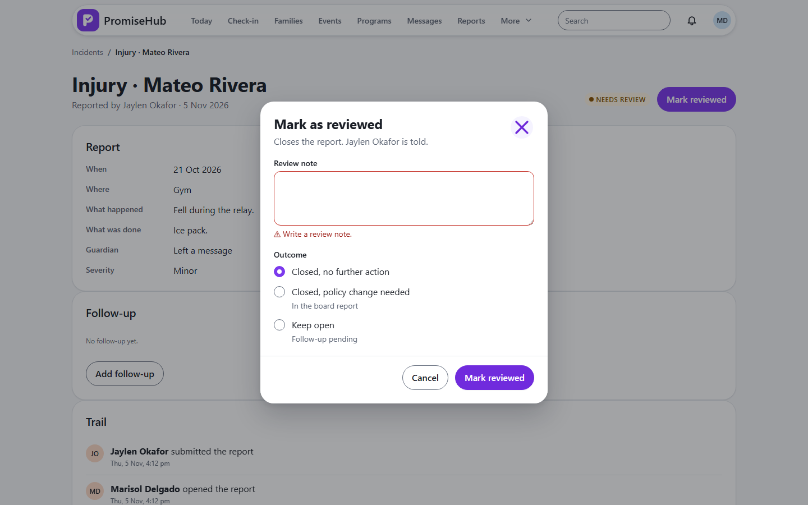
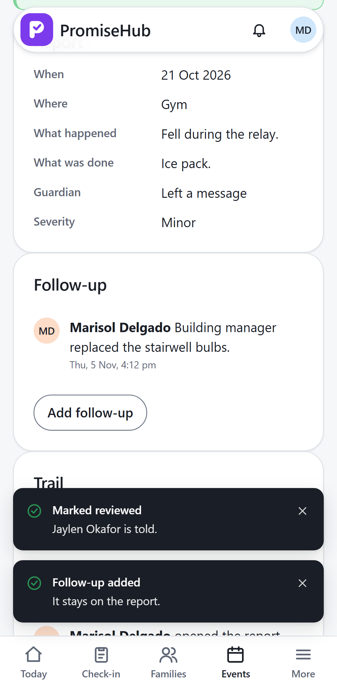

PromiseHub · Video 21
Review incidents
Read it, decide, and write it down
Read it, decide, and write it down
Closed with Marisol's note.


| Case | Answer |
|---|---|
| No review note | 422 |
| Reviewed twice | 409 |
| Follow-up after closing | 204, kept |
| Site lead reviews or reopens | 403 |
Next: the youth worker's session